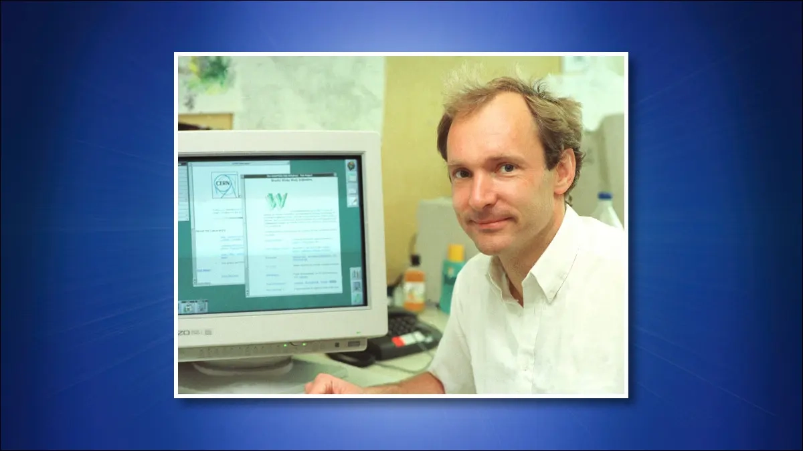
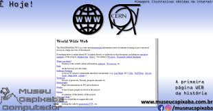

A Internet surgiu a partir da necessidade de conectar computadores para troca de informações. Com o passar dos anos, novas tecnologias foram desenvolvidas até o surgimento da World Wide Web (WWW), criada por Tim Berners-Lee, permitindo o acesso a documentos por meio de navegadores.
Em 1989, Tim Berners-Lee, trabalhando no CERN, observou dificuldades no compartilhamento de informações entre pesquisadores. Sua solução foi criar um sistema baseado em hipertexto, que deu origem à World Wide Web.
"A Web foi criada para ser um espaço universal de compartilhamento de informações."Referência ao trabalho desenvolvido por Tim Berners-Lee no CERN.

Figura 1 - Tim Berners-Lee.

Figura 2 - Primeiro navegador Web.
| Ano | Acontecimento | Importância |
|---|---|---|
| 1969 | ARPANET | Primeira grande rede de computadores. |
| 1983 | TCP/IP | Padronização da comunicação entre redes. |
| 1983 | DNS | Facilitou o acesso através de nomes de domínio. |
| 1989 | Proposta da WWW | Início da World Wide Web. |
| 1990 | HTML e HTTP | Base para a criação e acesso às páginas Web. |
| 1991 | Primeiro site Web | Disponibilização pública da Web. |
| Dados resumidos da evolução da Internet e da World Wide Web. | ||
A Web 1.0 era formada principalmente por páginas estáticas. Os usuários apenas consumiam conteúdo, com pouca ou nenhuma interação.
As aplicações atuais são dinâmicas e interativas, permitindo comentários, redes sociais, streaming, compras online e colaboração em tempo real.
Exemplo de evolução: HTML5 trouxe novos recursos multimídia, enquanto protocolos modernos utilizam versões atualizadas do HTTP. Redes atuais podem conectar bilhões de dispositivos e armazenar grandes volumes de dados utilizando tecnologias de nuvem e bancos de dados.
O protocolo TCP/IP é composto por diferentes camadas, incluindo a camada IP, responsável pelo endereçamento dos dispositivos na rede.